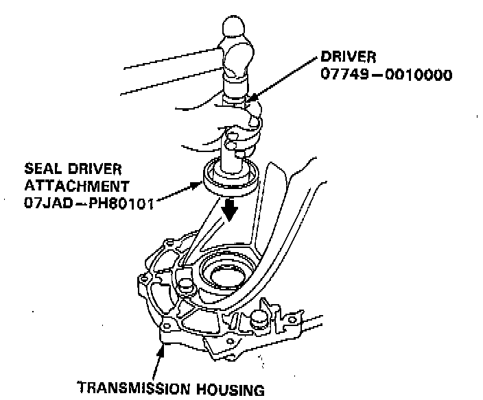
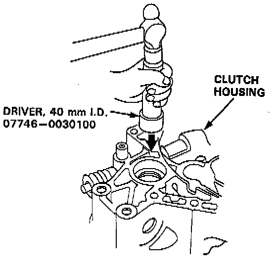
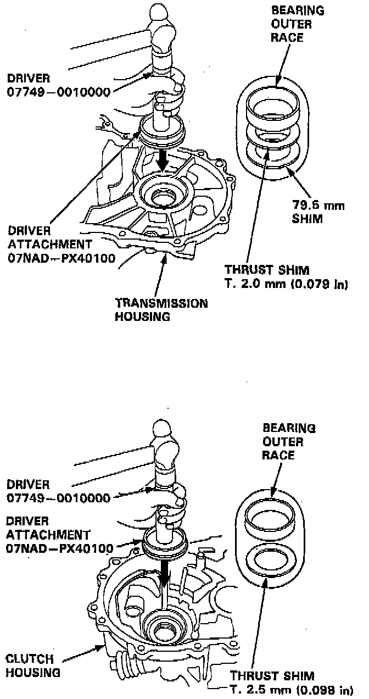

Bearing Outer Race Replacement
TOOLS REQUIRED- 07749-0010000 Driver
- 07JAD-PH80101 Seal Driver Attachment
- 07746-0030100 Driver, 40 mm I.D.
- 07NAD-PX40100 Driver Attachment
- Or Equivalent
CAUTION: Do not reuse the thrust shim and the 79.5 mm shim if the outer race was driven out.
NOTE:
- The bearing outer race and tapered roller bearing should be replaced as a set.
- Inspect and adjust the tapered roller bearing preload whenever the tapered roller bearing is replaced.
1. Remove the oil seals from the transmission housing and clutch housing.

2. Remove the bearing outer race, the thrust shim, and the 79.5 mm shim from the transmission housing.

3. Remove the bearing outer race and thrust shim from the clutch housing.

4. Install the new thrust shim and 79.5 mm shim, then drive the bearing outer races in the both housings using the special tools as shown.
NOTE:
- Install the bearing outer race squarely.
- Check that there is no clearance between the bearing outer race, thrust shim, and transmission housing.
5. Install the oil seal.